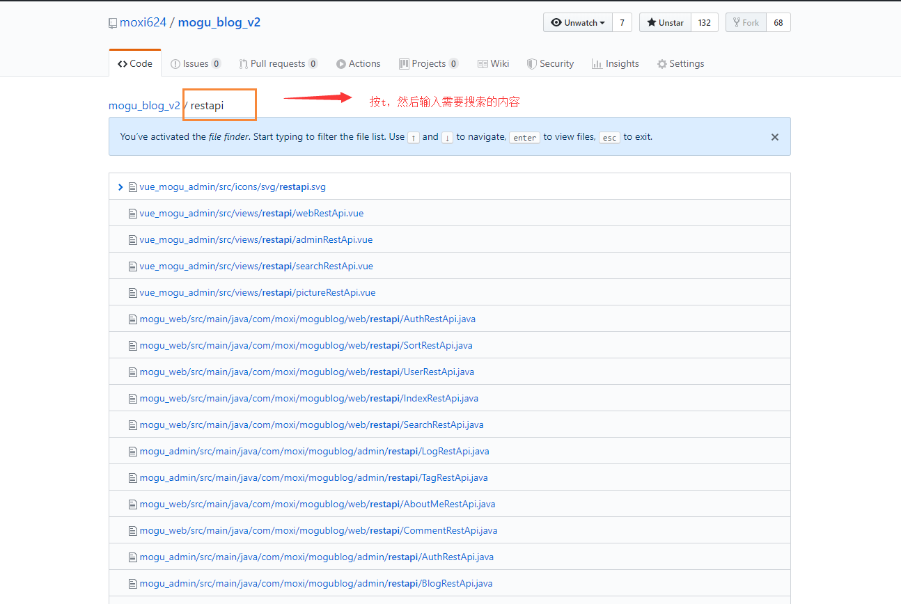

GitHub学习
使用Github可以查找很多优秀框架 + 源码
常用词含义
in关键字限制搜索范围
- 公式：
XXX关键字 in:name 或 description 或 readme - xxx in:name 项目名称含有XXX的
- xxx in:description 项目描述含有XXX的
- xxx in:readme 项目的readme文件中包含XXX的
- 组合使用
- xxx in:name,readme 项目的名称和readme中包含xxx的
stars或fork数量关键字查找
- 公式：
xxx关键字 stars 通配符:> 或者 :>=- 区间范围数字：
stars:数字1..数字2
- 案例
- 查找stars数大于等于5000的Springboot项目：springboot stars:>=5000
- 查找forks数在1000~2000之间的springboot项目：springboot forks:1000..5000
- 组合使用
- 查找star大于1000，fork数在500到1000：
springboot stars:>1000 forks:500..1000
- 查找star大于1000，fork数在500到1000：
awesome加强搜索
- 公式：
awesome 关键字：awesome系列，一般用来收集学习、工具、书籍类相关的项目 - 搜索优秀的redis相关的项目，包括框架，教程等 awesome redis
高亮显示某行代码
- 一行：地址后面紧跟 #L10
https://github.com/moxi624/mogu_blog_v2/blob/master/mogu_admin/pom.xml#L13
- 多行：地址后面紧跟 #Lx - #Ln
https://github.com/moxi624/mogu_blog_v2/blob/master/mogu_admin/pom.xml#L13-L30
项目内搜索
- 使用英文字母
t,开启项目内搜索

搜索某个地区内的大佬
- location：地区
- language：语言
- 例如：
location:beijing language:java